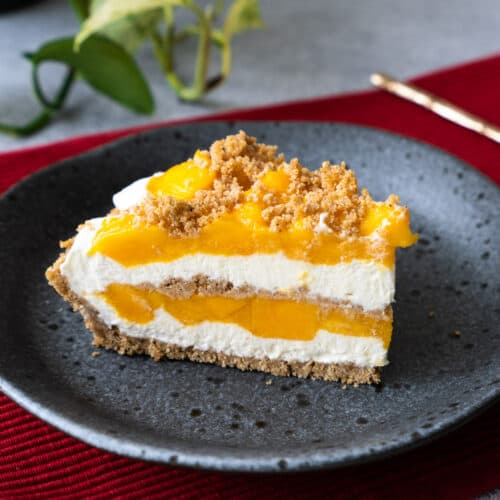

Mango Cream Pie Recipe
Ingredients:
- Crust: 1 ½ cups graham cracker crumbs, ¼ cup sugar, ½ cup melted butter.
- Filling: 2 ripe mangoes (pureed), ½ cup sugar, 2 tbsp lemon juice, ½ cup heavy cream, 8 oz cream cheese, ½ tsp vanilla.
- Topping:1 cup heavy cream, 2 tbsp powdered sugar, ½ tsp vanilla.
Instructions:
- Crust:Mix crumbs, sugar, and butter. Press into a pie dish, bake at 350°F (175°C) for 8-10 min. Cool.
- Filling: Cook mango puree, sugar, and lemon juice until slightly thick. Cool. Beat cream cheese and vanilla, then fold in mango mix and whipped cream. Pour into crust.
- Topping: Whip cream, sugar, and vanilla to soft peaks. Spread over filling.